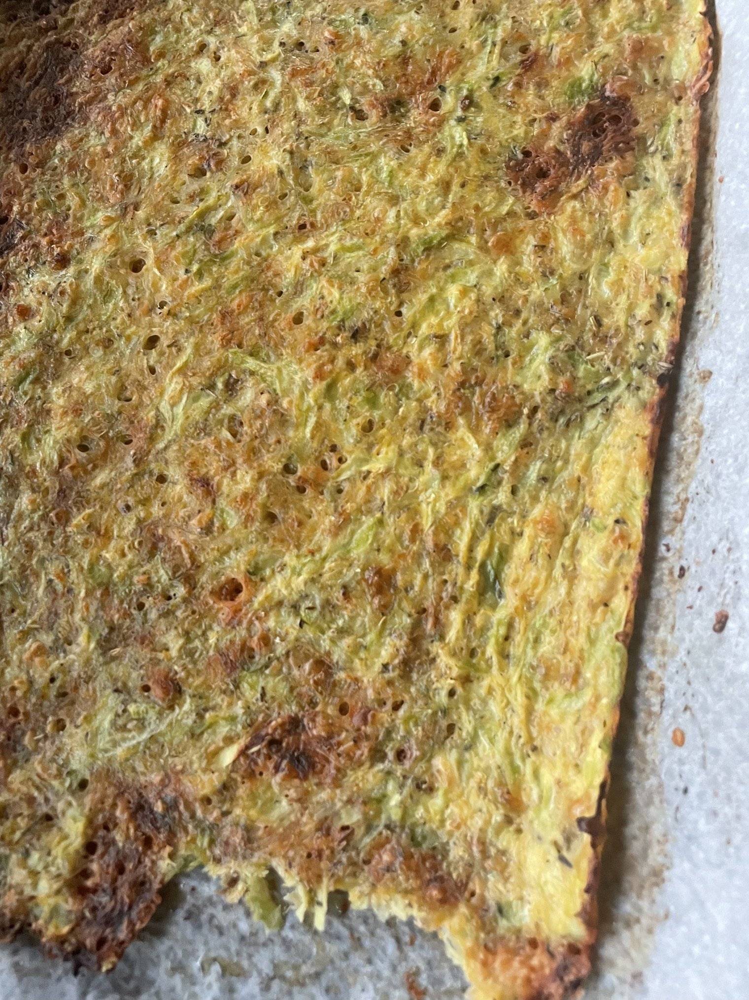

Calabacín rallado al horno con parmesano y huevo
Ingredientes
×
- 1 calabacín grande por persona (o 2 pequeños)
- 1 huevo
- parmesano
- sal
- pimienta
- ajo en polvo
- gruyère, emmental o comté

Preparación
Paso 1
Rallar 1 calabacín grande por persona (o 2 pequeños) con el rallador grande.
Paso 2
Se puede dejar en sal o escurrir directamente con una tela, sacándole bien el agua.
Paso 3
En un bol, mezclar el calabacín con 1 huevo, parmesano rallado, sal, pimienta y ajo en polvo. Opcional: añadir gruyère, emmental o comté.
Paso 4
Ponerlo en una bandeja de horno bien plano y estirado y hornear a 190ºC aprox. hasta que quede bien doradito.
Consejos
Si solo se hace con parmesano, queda mucho más crujiente.
Yo le pongo muy poco huevo para que no se note (tan poco que al mezclar casi ni se ve).
Se puede hacer en plan un bloque al horno, o tipo tortitas, también al horno o en sartén.